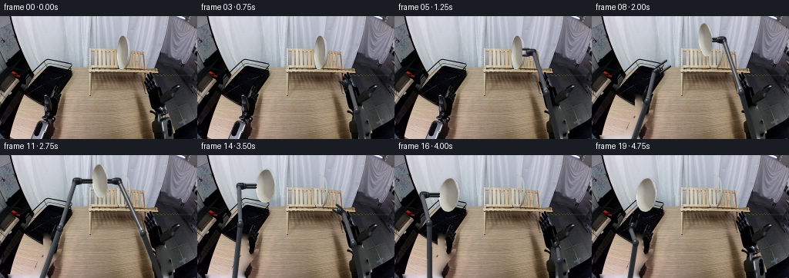
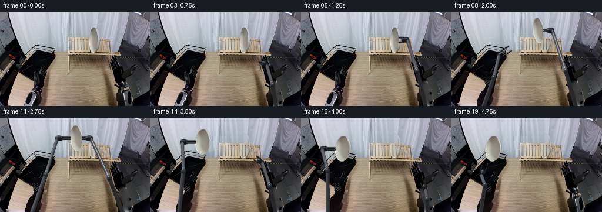
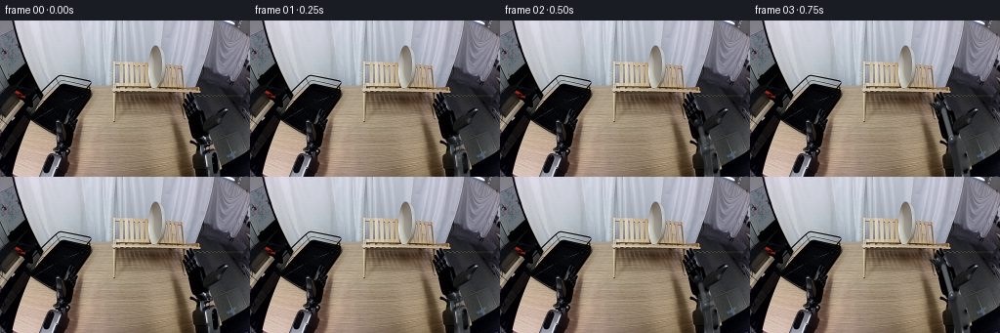

CODING AGENTS AS PIXEL WORLD MODELS
traex/GPT-6.1-Sol · common50_0034
点击播放 · 原生 RGB 像素
逐轮保存的候选
回放视频、检查图与代码变化。
每份候选均可单独播放。实际图片检查记录在下方工具轨迹中。
候选 01播放与检查图
点击播放 · 原生 RGB 像素

展开代码变化
--- 上一保存版本
+++ 本次保存版本
@@ -0,0 +1,255 @@
+from pathlib import Path
+import numpy as np
+from PIL import Image, ImageDraw, ImageFilter
+import artifact_io
+
+ROOT=Path(__file__).resolve().parent
+SRC=np.asarray(Image.open(ROOT/'first_frame.png').convert('RGB'),dtype=np.uint8)
+H,W=SRC.shape[:2]; S=3
+D=np.array([0.,.6,.8]); LIGHT=np.array([-.36,-.44,.823]); LIGHT/=np.linalg.norm(LIGHT)
+HALF=(LIGHT+D); HALF/=np.linalg.norm(HALF)
+
+def polygon_mask(points):
+ m=Image.new('L',(W*S,H*S));ImageDraw.Draw(m).polygon([(round(x*S),round(y*S)) for x,y in points],fill=255)
+ return np.asarray(m.resize((W,H),Image.Resampling.LANCZOS),float)/255
+
+# The silhouette of the single ceramic plate, measured from the supplied RGB image.
+PLATE_OUTLINE=[(159,25),(161.5,26),(164,30),(166,36),(167,44),(167,51),(165,59),(163,65),(159.5,69),(156,69),(154,66),(152.5,63),(152,58),(151,52),(151,46),(152,39),(152.5,35),(154,30),(156,27)]
+pm=polygon_mask(PLATE_OUTLINE)
+# Background exposed by the removed plate: wall above, the repeating wooden slats below.
+empty=SRC.copy()
+for y in range(24,71):
+ for x in range(150,169):
+ if y<43:
+ color=SRC[22,x].astype(float)-(y-22)*.63
+ else:
+ color=SRC[y,x-24].astype(float)+np.array([-10.,-8.,-5.])
+ empty[y,x]=np.clip(color,0,255)
+empty=np.uint8(SRC*(1-pm[...,None])+empty*pm[...,None])
+
+left_polys=[[(56,101),(61,101),(66,104),(67,102),(70,97),(73,96),(73,101),(69,107),(66,108),(68,122),(65,129),(58,127),(56,116)],
+ [(58,125),(65,123),(69,129),(73,126),(76,122),(80,121),(79,128),(74,133),(70,138),(65,140),(60,139),(55,135)],
+ [(53,132),(62,134),(64,136),(70,138),(64,147),(61,154),(63,160),(11,160),(10,155),(40,155),(46,146),(49,138)]]
+right_polys=[[(205,116),(212,117),(218,123),(220,128),(222,133),(219,137),(222,140),(227,147),(224,151),(218,154),(219,160),(209,160),(209,146),(207,139),(203,135),(203,129),(203,120)]]
+lm=np.maximum.reduce([polygon_mask(p) for p in left_polys]);rm=np.maximum.reduce([polygon_mask(p) for p in right_polys])
+
+# A deterministic, local numerical background fill. Only the robot silhouettes change.
+def local_fill(mask):
+ filled=SRC.astype(float).copy()
+ known=1-mask
+ # Initialize from nearby unobstructed floor/table pixels, keeping surface coloration.
+ for y,x in zip(*np.where(mask>.01)):
+ if x<100:
+ if y>=135 and x<58:
+ xx=max(22,min(42,x-17)); filled[y,x]=SRC[y,xx]
+ elif y>=128 and x>=69:
+ filled[y,x]=SRC[y,min(101,x+20)]
+ else:
+ xx=max(22,x-27);filled[y,x]=SRC[y,xx]
+ else:
+ xx=min(244,x+23)
+ yy=min(y,133) if y>139 else y
+ filled[y,x]=SRC[yy,xx]
+ # Relax only the missing pixels; fixed boundary pixels retain the original texture.
+ active=mask>.1
+ for _ in range(100):
+ nxt=(np.roll(filled,1,0)+np.roll(filled,-1,0)+np.roll(filled,1,1)+np.roll(filled,-1,1))/4
+ filled[active]=nxt[active]*.9+filled[active]*.1
+ return np.clip(filled,0,255)
+lf=local_fill(lm);rf=local_fill(rm)
+
+# Plate extraction in circular material coordinates. Row edges avoid sampling the wall.
+edge_y=np.array([25,26,28,31,35,40,45,50,55,60,63,65,67,68,69],float)
+edge_l=np.array([159,157,155.5,154,152.8,152,151.5,151.5,152,152.7,153.2,154,155,156,157],float)
+edge_r=np.array([160,162,163.8,165.5,166.5,166.6,166.5,166.3,165,164,162.5,161.5,160.5,159.4,158.5],float)
+
+def sample_rgb(x,y):
+ x=np.clip(x,0,W-1.001);y=np.clip(y,0,H-1.001)
+ x0=x.astype(int);y0=y.astype(int);dx=x-x0;dy=y-y0
+ return (SRC[y0,x0]*(1-dx[...,None])*(1-dy[...,None])+SRC[y0,x0+1]*dx[...,None]*(1-dy[...,None])+SRC[y0+1,x0]*(1-dx[...,None])*dy[...,None]+SRC[y0+1,x0+1]*dx[...,None]*dy[...,None])
+
+class Geometry:
+ def __init__(self):
+ self.rgb=np.zeros((H*S,W*S,3),np.float32)
+ self.depth=np.full((H*S,W*S),-1e6,np.float32)
+ self.cover=np.zeros((H*S,W*S),np.float32)
+ def bounds(self,pts,r):
+ p=np.asarray(pts);p=np.stack([p[:,0],p[:,1]-.75*p[:,2]],1)
+ x0=max(0,int(np.floor((p[:,0].min()-r-2)*S))); x1=min(W*S,int(np.ceil((p[:,0].max()+r+2)*S)))
+ y0=max(0,int(np.floor((p[:,1].min()-r*1.25-2)*S))); y1=min(H*S,int(np.ceil((p[:,1].max()+r*1.25+2)*S)))
+ return x0,y0,x1,y1
+ def capsule(self,A,B,r,color):
+ A=np.array(A,float);B=np.array(B,float);x0,y0,x1,y1=self.bounds([A,B],r)
+ if x1<=x0 or y1<=y0:return
+ yy,xx=np.mgrid[y0:y1,x0:x1].astype(float);xx=(xx+.5)/S;yy=(yy+.5)/S
+ O=np.stack([xx,yy,np.zeros_like(xx)],-1)
+ ab=B-A;length=np.linalg.norm(ab);axis=ab/max(length,1e-8)
+ oc=O-A; da=D.dot(axis); h0=oc@axis
+ pp=oc-h0[...,None]*axis;dp=D-da*axis
+ aa=dp@dp;bb=2*(pp@dp);cc=(pp*pp).sum(-1)-r*r
+ disc=bb*bb-4*aa*cc
+ t=(-bb+np.sqrt(np.maximum(0,disc)))/(2*max(aa,1e-8))
+ h=h0+t*da;ok=(disc>=0)&(h>=0)&(h<=length)
+ surface=O+t[...,None]*D
+ N=(surface-A-h[...,None]*axis)/r
+ best=np.where(ok,t,-1e6)
+ for C in [A,B]:
+ q=O-C;b=2*(q@D);c=(q*q).sum(-1)-r*r;dis=b*b-4*c
+ ts=(-b+np.sqrt(np.maximum(0,dis)))/2
+ valid=(dis>=0)&(ts>best)
+ ns=(O+ts[...,None]*D-C)/r
+ N=np.where(valid[...,None],ns,N);best=np.where(valid,ts,best)
+ valid=best>self.depth[y0:y1,x0:x1]
+ valid &=best>-1e5
+ if not valid.any():return
+ nd=np.maximum(0,N@LIGHT);sp=np.maximum(0,N@HALF)**42
+ # Brushed metal: fixed material variation, not per-frame noise.
+ grain=1.2*np.sin(h*2.1+N[...,0]*37)+.7*np.cos(h*.91+N[...,1]*29)
+ col=np.asarray(color)[None,None,:]*(.43+.65*nd[...,None])+115*sp[...,None]+grain[...,None]
+ dep=self.depth[y0:y1,x0:x1];cols=self.rgb[y0:y1,x0:x1];cov=self.cover[y0:y1,x0:x1]
+ dep[valid]=best[valid];cols[valid]=np.clip(col[valid],0,255);cov[valid]=1
+ def plate(self,center,minor,angle,cz):
+ cx,cy=center; R=17.6
+ a=np.deg2rad(angle);ca=np.cos(a);sa=np.sin(a)
+ U=np.array([minor*ca,minor*sa]); V=np.array([-22*sa,22*ca])
+ mat=np.column_stack([U,V]);inv=np.linalg.inv(mat)
+ rr=25
+ x0=max(0,int((cx-rr)*S));x1=min(W*S,int((cx+rr+1)*S));y0=max(0,int((cy-rr)*S));y1=min(H*S,int((cy+rr+1)*S))
+ yy,xx=np.mgrid[y0:y1,x0:x1].astype(float);xy=np.stack([(xx+.5)/S-cx,(yy+.5)/S-cy],-1)
+ uv=xy@inv.T;u=uv[...,0];v=uv[...,1];inside=u*u+v*v<=1
+ sy=47.2+22*v;sl=np.interp(sy,edge_y,edge_l);sr=np.interp(sy,edge_y,edge_r)
+ frac=u/np.sqrt(np.maximum(1e-4,1-v*v));sx=(sl+sr)/2+np.clip(frac,-1,1)*(sr-sl)/2
+ color=sample_rgb(sx,sy)
+ dep=cz/.8+np.sqrt(R*R-minor*minor)*u-13.2*v
+ valid=inside&(dep>self.depth[y0:y1,x0:x1])
+ self.depth[y0:y1,x0:x1][valid]=dep[valid]
+ self.rgb[y0:y1,x0:x1][valid]=color[valid]
+ self.cover[y0:y1,x0:x1][valid]=1
+ def composite(self,bg):
+ alpha=np.asarray(Image.fromarray(np.uint8(self.cover*255)).resize((W,H),Image.Resampling.LANCZOS),float)/255
+ col=np.empty((H,W,3),float)
+ for k in range(3):
+ col[...,k]=np.asarray(Image.fromarray(self.rgb[...,k],mode='F').resize((W,H),Image.Resampling.LANCZOS))
+ # rgb is premultiplied by the binary supersampled coverage.
+ return np.clip(bg*(1-alpha[...,None])+col,0,255),alpha
+
+class Arm:
+ def __init__(self,side):
+ self.side=side
+ if side=='left':self.base=np.array([46.,185.,0.]);e2=np.array([63.,141.]);w2=np.array([63.,128.])
+ else:self.base=np.array([218.,185.,0.]);e2=np.array([215.,143.]);w2=np.array([213.,132.])
+ ze=max(np.roots([1.5625,1.5*(e2[1]-self.base[1]),np.sum((e2-self.base[:2])**2)-78**2]))
+ E=np.array([e2[0],e2[1]+.75*ze,ze]);Wi=np.array([w2[0],w2[1]+15,20.])
+ self.l1=78.;self.l2=np.linalg.norm(E-Wi)
+ u=(Wi-self.base);u/=np.linalg.norm(u)
+ self.bend=E-self.base;self.bend-=self.bend.dot(u)*u;self.bend/=np.linalg.norm(self.bend)
+ def pose(self,screen,z):
+ wrist=np.array([screen[0],screen[1]+.75*z,z]);d=wrist-self.base;dist=np.linalg.norm(d);u=d/dist
+ a=(self.l1**2-self.l2**2+dist**2)/(2*dist)
+ n=self.bend-self.bend.dot(u)*u;n/=np.linalg.norm(n)
+ elbow=self.base+a*u+np.sqrt(max(0,self.l1**2-a*a))*n
+ return elbow,wrist
+ def render(self,g,screen,z,theta,opening):
+ E,P=self.pose(screen,z);B=self.base
+ col=(94,98,106) if self.side=='left' else (89,90,94)
+ g.capsule(B,E,3.4,col)
+ g.capsule(E,P,2.75,col)
+ g.capsule(E,E,4.2,(69,73,81))
+ a=(P-E);a/=np.linalg.norm(a)
+ g.capsule(E+a*3,E+a*6,3.0,(119,124,131))
+ g.capsule(P-a*4,P-a*2,3.1,(48,52,60))
+ # Parallel-jaw gripper. Its palm and both solid fingers share one rigid tool frame.
+ tt=np.deg2rad(theta);t=np.array([np.cos(tt),.64*np.sin(tt),-.48*np.sin(tt)])
+ ns=np.array([-np.sin(tt),.64*np.cos(tt),-.48*np.cos(tt)])
+ length=22 if self.side=='left' else 14
+ g.capsule(P,P+t*4.6,3.6,(35,38,45))
+ g.capsule(P+t*4.5,P+t*7,3.15,(57,60,65))
+ for sign in [-1,1]:
+ Q=P+t*6.5+ns*opening*sign*.5
+ F=P+t*length+ns*opening*sign*.5
+ g.capsule(Q,F,1.15,(45,48,54))
+ g.capsule(F-t*2.5,F,.95,(129,130,134))
+
+left=Arm('left');right=Arm('right')
+
+def smooth_keys(i,keys):
+ if i<=keys[0][0]:return np.array(keys[0][1],float)
+ if i>=keys[-1][0]:return np.array(keys[-1][1],float)
+ for (a,A),(b,B) in zip(keys[:-1],keys[1:]):
+ if a<=i<=b:
+ t=(i-a)/(b-a);t=t*t*(3-2*t)
+ return np.array(A)*(1-t)+np.array(B)*t
+
+def motion(i):
+ # cx,cy, projected half-width, tilt, and physical plate height.
+ pk=[(0,[159.2,47.2,7.7,-3,30]),(6,[159.2,47.2,7.7,-3,30]),(8,[148,31,9.3,-5,46]),(10,[130,34,10.4,-3,45]),(11,[130,34,10.4,-3,45]),(13,[105,38,12.4,3,42]),(15,[73,43,13.2,7,37]),(16,[71,52,13.2,7,28]),(19,[71,52,13.2,7,28])]
+ p=smooth_keys(i,pk);cx,cy,m,ang,cz=p
+ dz=.8*np.sqrt(17.6**2-m*m)
+ right_target=[cx+m+14,cy,cz+dz,180,3.2]
+ left_target=[cx-m-22,cy,cz-dz,0,3.2]
+ if i<5:
+ rp=smooth_keys(i,[(0,[213,132,20,-106,8]),(1,[213,130.5,21,-108,8]),(3,[198,91,35,-139,8]),(5,[181,47.2,42.6,-180,8])])
+ elif i<=11:
+ rp=np.array(right_target);rp[4]=8 if i==5 else 3.2
+ else:
+ rp=smooth_keys(i,[(12,[156,40,56,-176,8]),(14,[190,76,39,-145,8]),(16,[212,123,23,-109,8]),(18,[213,132,20,-106,8])])
+ if i<10:
+ lp=smooth_keys(i,[(0,[63,128,20,-92,9]),(6,[63,128,20,-92,9]),(8,[81,74,32,-34,9]),(10,[97.6,34,33.6,0,9])])
+ elif i<=17:
+ lp=np.array(left_target);lp[4]=7 if i==10 else (8 if i==17 else 3.2)
+ else:
+ lp=smooth_keys(i,[(17,[35.8,52,18.7,0,8]),(18,[33,70,20,-28,8]),(19,[51,98,23,-72,8])])
+ return p,lp,rp
+
+def shadow(bg,p,i):
+ if i<7:return bg
+ cx,cy,m,ang,cz=p
+ # Soft object shadow, attached to the table plane rather than moving with the camera.
+ yy,xx=np.mgrid[:H,:W];sy=cy+.75*(cz-13)
+ a=np.exp(-.5*((xx-cx-3)/(m+3))**2-.5*((yy-sy)/4.1)**2)*.11
+ return bg*(1-a[...,None])
+
+def main():
+ frames=[SRC.copy()]
+ diagnostics=[]
+ for i in range(1,20):
+ p,lp,rp=motion(i)
+ la=float(np.clip((i-6)/2,0,1));ra=float(np.clip(i/3,0,1))
+ # Re-use original right arm on return to its original pose.
+ if i>=17:ra=float(np.clip((19-i)/2,0,1))
+ bg=SRC.astype(float).copy()
+ if i>=7:bg=empty.astype(float).copy()
+ bg=bg*(1-(lm*la)[...,None])+lf*(lm*la)[...,None]
+ bg=bg*(1-(rm*ra)[...,None])+rf*(rm*ra)[...,None]
+ bg=shadow(bg,p,i)
+ # Render each arm independently for a short, continuous appearance transition.
+ # Fully articulated motion thereafter is calculated with fixed-length 3D links.
+ g=Geometry()
+ if la>0:left.render(g,lp[:2],lp[2],lp[3],lp[4])
+ if ra>0:right.render(g,rp[:2],rp[2],rp[3],rp[4])
+ if i>=7:g.plate(p[:2],p[2],p[3],p[4])
+ result,alpha=g.composite(bg)
+ # Blend only the newly exposed arm geometry during departure/return.
+ if 0<la<1 or 0<ra<1:
+ # Layer-alpha transition is local, not a camera or full-frame dissolve.
+ weights=np.ones((H,W),float)
+ if 0<la<1:
+ E,PP=left.pose(lp[:2],lp[2]);coords=np.array([left.base,E,PP]);x0,y0,x1,y1=g.bounds(coords,27)
+ weights[y0//S:min(H,(y1+S-1)//S),x0//S:min(W,(x1+S-1)//S)]=la
+ if 0<ra<1:
+ E,PP=right.pose(rp[:2],rp[2]);coords=np.array([right.base,E,PP]);x0,y0,x1,y1=g.bounds(coords,21)
+ weights[y0//S:min(H,(y1+S-1)//S),x0//S:min(W,(x1+S-1)//S)]=ra
+ result=bg+(result-bg)*weights[...,None]
+ # Seat the ceramic disc behind the drying rack's unchanged near wire.
+ if i>=16:
+ front=polygon_mask([(45,73),(49,73),(75,92),(72,95)])
+ # Only restore the original near rail where it really contains metal.
+ rail=(SRC.mean(2)<95)*front
+ result=result*(1-rail[...,None])+SRC*rail[...,None]
+ frames.append(np.uint8(np.clip(np.rint(result),0,255)))
+ diagnostics.append((i,*p,*lp,*rp))
+ frames=np.stack(frames)
+ artifact_io.save(frames,ROOT)
+ np.save(ROOT/'.tmp'/'motion.npy',np.array(diagnostics))
+ print('Saved',frames.shape,frames.dtype,'first frame identical:',np.array_equal(frames[0],SRC))
+if __name__=='__main__':main()
候选 02播放与检查图
点击播放 · 原生 RGB 像素


展开代码变化
--- 上一保存版本
+++ 本次保存版本
@@ -55,6 +55,18 @@
for _ in range(100):
nxt=(np.roll(filled,1,0)+np.roll(filled,-1,0)+np.roll(filled,1,1)+np.roll(filled,-1,1))/4
filled[active]=nxt[active]*.9+filled[active]*.1
+ # Keep the dark floor distinct from the adjacent wooden table. Diffusion
+ # otherwise drags the bright table edge into the newly revealed floor.
+ for y,x in zip(*np.where(mask>.01)):
+ if x<100 and y>=99:
+ edge=np.interp(y,[99,103,122,130,137,145,160],[20,29,58,55,48,44,42])
+ table_edge=np.interp(y,[99,115,130,145,160],[78,73,72,70,70])
+ if edge<x<table_edge:
+ yy=int(np.clip(y-20,80,119))
+ xx=int(68+(x+y)%5)
+ sample=SRC[yy,xx].astype(float)
+ ramp=max(0,y-127)*.4
+ filled[y,x]=sample*.7+np.array([4+ramp,3+ramp*.7,5+ramp*.8])
return np.clip(filled,0,255)
lf=local_fill(lm);rf=local_fill(rm)
@@ -129,7 +141,7 @@
alpha=np.asarray(Image.fromarray(np.uint8(self.cover*255)).resize((W,H),Image.Resampling.LANCZOS),float)/255
col=np.empty((H,W,3),float)
for k in range(3):
- col[...,k]=np.asarray(Image.fromarray(self.rgb[...,k],mode='F').resize((W,H),Image.Resampling.LANCZOS))
+ col[...,k]=np.asarray(Image.fromarray(self.rgb[...,k]).resize((W,H),Image.Resampling.LANCZOS))
# rgb is premultiplied by the binary supersampled coverage.
return np.clip(bg*(1-alpha[...,None])+col,0,255),alpha
可观测工具轨迹
实际执行的命令与返回图片。
命令 1exit 0
/bin/bash -lc "ls -la && cat prompt.txt && printf '\\n---RULES---\\n' && cat GENERATION_RULES.md"
命令 2exit 0
/bin/bash -lc "cat task_spec.json && cat artifact_io.py && python - <<'PY'
from PIL import Image
import numpy as np
im=np.array(Image.open('first_frame.png'))
print(im.shape)
# grouped color ascii across complete frame
im2=np.array(Image.fromarray(im).resize((128,80)))
# chroma semantic symbols: gray dark.,white W red R wood o green g blue b
for row in im2:
s=''
for r,g,b in row.astype(float):
if max(r,g,b)<35:c=' '
elif max(r,g,b)-min(r,g,b)<12:c='W' if r>210 else 'w' if r>165 else '+' if r>110 else ':' if r>70 else '.'
elif r>g*1.15 and g>b*1.10:c='O' if r>170 else 'o' if r>90 else ','
elif b>r*1.13 and b>g*1.1:c='B' if b>160 else 'b'
elif g>r*1.1 and g>b*1.05:c='G' if g>120 else 'g'
elif r>150 and g>120 and b>85:c='y'
else:c='-'
s+=c
print(s)
PY"命令 3exit 0
/bin/bash -lc "python - <<'PY'
from PIL import Image
import numpy as np
im=np.array(Image.open('first_frame.png'))
v=im.mean(2)
chars=' .,:;ox%#@'
print(' '+''.join(str((i//5)%10) for i in range(128)))
for y in range(0,160,2):
print('%03d '%y+''.join(chars[int(z)*9//256] for z in v[y:y+2].reshape(2,128,2).mean((0,2))))
print('\\ncolors at 8px grid')
for y in range(0,160,8):
print(y,[(x,tuple(im[y:y+4,x:x+4].mean((0,1)).astype(int))) for x in range(0,256,8)])
PY"命令 4exit 0
/bin/bash -lc "python - <<'PY'
from PIL import Image
import numpy as np
im=np.array(Image.open('first_frame.png'))
cs=' .:-=+*#%@'
for title,box in [('back',(100,20,200,100)),('left',(0,45,100,125)),('right',(190,45,256,160))]:
x0,y0,x1,y1=box
print('\\n'+title+' '+str(box));print(' '+''.join(str((x//10)%10) for x in range(x0,x1)));print(' '+''.join(str(x%10) for x in range(x0,x1)))
for y in range(y0,y1):
print('%03d '%y+''.join(cs[min(9,int(p.mean())*10//256)] for p in im[y,x0:x1]))
PY"命令 5exit 0
/bin/bash -lc "python - <<'PY'
from PIL import Image
import numpy as np
im=np.asarray(Image.open('first_frame.png')).astype(int)
for y in range(24,72,3):
print(y,' '.join(f'{x}:{tuple(im[y,x])}' for x in range(146,170,2)))
for box in [(0,95,90,160),(195,112,232,160),(100,38,201,77)]:
x0,y0,x1,y1=box;print('\\n',box)
print(' '+''.join(str(x//10%10) for x in range(x0,x1)));print(' '+''.join(str(x%10) for x in range(x0,x1)))
for y in range(y0,y1):
s=''
for r,g,b in im[y,x0:x1]:
v=(r+g+b)/3
if v<15:c=' '
elif v<35:c='.'
elif r-b>12:c='o' if v<80 else 'w' if v<130 else 'W' if v<180 else 'Y'
elif b-r>8:c='b' if v<80 else 'B' if v<130 else 'C' if v<180 else 'D'
else:c=':' if v<60 else '=' if v<90 else '+' if v<120 else '*' if v<160 else '#' if v<200 else '@'
s+=c
print('%03d '%y+s)
PY"命令 6exit 0
/bin/bash -lc "python - <<'PY'
from PIL import Image
import numpy as np
im=np.array(Image.open('first_frame.png')).astype(int)
for title,box in [('left_robot',(45,96,79,160)),('right_robot',(203,110,233,160)),('plate',(148,23,171,72))]:
x0,y0,x1,y1=box; print('\\n',title);print(' '+''.join(str(x%10) for x in range(x0,x1)))
for y in range(y0,y1):
print('%03d '%y+''.join(' ..::--==++**##%%@@'[min(9,int(p.mean())*10//256)*2:min(9,int(p.mean())*10//256)*2+2] for p in im[y,x0:x1]))
print('Left 64,116 near gripper:',[(y,tuple(im[y,64])) for y in range(100,160,2)])
PY"命令 7exit 0
/bin/bash -lc "python - <<'PY'
from PIL import Image
import numpy as np
im=np.array(Image.open('first_frame.png')).astype(int)
print('Each entry brightness/ R-B: x=148..170')
for y in range(24,71):
print(y,' '.join('%3d/%+3d'%(int(p.mean()),p[0]-p[2]) for p in im[y,148:171]))
print('\\nrobot grippers same x205..224')
for y in range(117,146):
print(y,' '.join('%3d'%(int(p.mean())) for p in im[y,205:225]))
PY"命令 8exit 0
/bin/bash -lc "python - <<'PY'
import numpy as np
for base,hand in [([50,185,0],[62,142,12]),([216,185,0],[214,143,12]),([216,185,0],[167,70,32]),([50,185,0],[108,80,32])]:
B=np.array(base); W=np.array(hand);d=W-B;dist=np.linalg.norm(d);u=d/dist;a=(77**2-77**2+dist**2)/(2*dist);n=np.array([0,.6,.8]);n-=n.dot(u)*u;n/=np.linalg.norm(n);E=B+a*u+np.sqrt(77**2-a*a)*n
print('B',B,'E',E,'proj',E[:2]-[0,.75*E[2]],'Wproj',W[:2]-[0,.75*W[2]])
PY"命令 9exit 0
/bin/bash -lc "python - <<'PY'
import numpy as np
for L1,L2 in [(68,68),(75,60),(65,65),(80,70)]:
print('lengths',L1,L2)
for B,W in [(np.array([50.,182.,0]),np.array([63.,145.,20.])),(np.array([214.,182.,0]),np.array([212.,144.,18.])),(np.array([214.,182.,0]),np.array([181.,66.,24.]))]:
d=W-B;dist=np.linalg.norm(d);u=d/dist;a=(L1*L1-L2*L2+dist*dist)/(2*dist);n=np.array([0.,.9,.4]);n-=n.dot(u)*u;n/=np.linalg.norm(n);E=B+a*u+np.sqrt(max(0,L1*L1-a*a))*n
print(E, 'proj',E[:2]-[0,.75*E[2]])
PY"命令 10exit 0
/bin/bash -lc "python - <<'PY'
import numpy as np
from PIL import Image
im=np.asarray(Image.open('first_frame.png')); c=' .:-=+*#%@'
print('black rack details'); print(' '+''.join(str(x//10%10) for x in range(0,105)));print(' '+''.join(str(x%10) for x in range(0,105)))
for y in range(54,107):
print('%03d '%y+''.join(c[min(9,int(p.mean())*10//256)] for p in im[y,:105]))
PY"命令 11exit 0
/bin/bash -lc "python - <<'PY'
from PIL import Image
import numpy as np
im=np.array(Image.open('first_frame.png'))
for y in range(99,141):
print(y,' '.join('%3d'%v for v in im[y,56:77].mean(1).astype(int)))
PY"命令 12exit 0
/bin/bash -lc "python - <<'PY'
import numpy as np
# fit 3d from initial elbow
for B,E2,W2 in [(np.array([46.,185.,0.]),np.array([63.,141.]),np.array([62.,129.])),(np.array([218.,185.,0.]),np.array([215.,143.]),np.array([214.,132.]))]:
z=np.roots([1.5625,1.5*(E2[1]-B[1]),np.sum((E2-B[:2])**2)-78**2]);ze=max(z)
E=np.array([*E2,ze]);E[1]+=.75*ze
W=np.array([*W2,20.]);W[1]+=.75*W[2]
L2=np.linalg.norm(W-E);d=W-B;u=d/np.linalg.norm(d);n=E-B;n-=np.dot(n,u)*u;n/=np.linalg.norm(n)
print('E',E,'W',W,'L2',L2,'bend',n)
for scr,z in [([180,54],26),([141,42],45),([111,57],45),([78,49],26)]:
W=np.array([scr[0],scr[1]+.75*z,z]);d=W-B;dist=np.linalg.norm(d);u=d/dist;a=(78**2-L2**2+dist**2)/(2*dist);n2=n-n.dot(u)*u;n2/=np.linalg.norm(n2);Ep=B+a*u+np.sqrt(max(0,78**2-a*a))*n2;print('target',scr,'d',dist,'Eproj',Ep[:2]-[0,.75*Ep[2]])
PY"命令 13exit 0
/bin/bash -lc "cat > generate.py <<'PY'
from pathlib import Path
import numpy as np
from PIL import Image, ImageDraw, ImageFilter
import artifact_io
ROOT=Path(__file__).resolve().parent
SRC=np.asarray(Image.open(ROOT/'first_frame.png').convert('RGB'),dtype=np.uint8)
H,W=SRC.shape[:2]; S=3
D=np.array([0.,.6,.8]); LIGHT=np.array([-.36,-.44,.823]); LIGHT/=np.linalg.norm(LIGHT)
HALF=(LIGHT+D); HALF/=np.linalg.norm(HALF)
def polygon_mask(points):
m=Image.new('L',(W*S,H*S));ImageDraw.Draw(m).polygon([(round(x*S),round(y*S)) for x,y in points],fill=255)
return np.asarray(m.resize((W,H),Image.Resampling.LANCZOS),float)/255
# The silhouette of the single ceramic plate, measured from the supplied RGB image.
PLATE_OUTLINE=[(159,25),(161.5,26),(164,30),(166,36),(167,44),(167,51),(165,59),(163,65),(159.5,69),(156,69),(154,66),(152.5,63),(152,58),(151,52),(151,46),(152,39),(152.5,35),(154,30),(156,27)]
pm=polygon_mask(PLATE_OUTLINE)
# Background exposed by the removed plate: wall above, the repeating wooden slats below.
empty=SRC.copy()
for y in range(24,71):
for x in range(150,169):
if y<43:
color=SRC[22,x].astype(float)-(y-22)*.63
else:
color=SRC[y,x-24].astype(float)+np.array([-10.,-8.,-5.])
empty[y,x]=np.clip(color,0,255)
empty=np.uint8(SRC*(1-pm[...,None])+empty*pm[...,None])
left_polys=[[(56,101),(61,101),(66,104),(67,102),(70,97),(73,96),(73,101),(69,107),(66,108),(68,122),(65,129),(58,127),(56,116)],
[(58,125),(65,123),(69,129),(73,126),(76,122),(80,121),(79,128),(74,133),(70,138),(65,140),(60,139),(55,135)],
[(53,132),(62,134),(64,136),(70,138),(64,147),(61,154),(63,160),(11,160),(10,155),(40,155),(46,146),(49,138)]]
right_polys=[[(205,116),(212,117),(218,123),(220,128),(222,133),(219,137),(222,140),(227,147),(224,151),(218,154),(219,160),(209,160),(209,146),(207,139),(203,135),(203,129),(203,120)]]
lm=np.maximum.reduce([polygon_mask(p) for p in left_polys]);rm=np.maximum.reduce([polygon_mask(p) for p in right_polys])
# A deterministic, local numerical background fill. Only the robot silhouettes change.
def local_fill(mask):
filled=SRC.astype(float).copy()
known=1-mask
# Initialize from nearby unobstructed floor/table pixels, keeping surface coloration.
for y,x in zip(*np.where(mask>.01)):
if x<100:
if y>=135 and x<58:
xx=max(22,min(42,x-17)); filled[y,x]=SRC[y,xx]
elif y>=128 and x>=69:
filled[y,x]=SRC[y,min(101,x+20)]
else:
xx=max(22,x-27);filled[y,x]=SRC[y,xx]
else:
xx=min(244,x+23)
yy=min(y,133) if y>139 else y
filled[y,x]=SRC[yy,xx]
# Relax only the missing pixels; fixed boundary pixels retain the original texture.
active=mask>.1
for _ in range(100):
nxt=(np.roll(filled,1,0)+np.roll(filled,-1,0)+np.roll(filled,1,1)+np.roll(filled,-1,1))/4
filled[active]=nxt[active]*.9+filled[active]*.1
return np.clip(filled,0,255)
lf=local_fill(lm);rf=local_fill(rm)
# Plate extraction in circular material coordinates. Row edges avoid sampling the wall.
edge_y=np.array([25,26,28,31,35,40,45,50,55,60,63,65,67,68,69],float)
edge_l=np.array([159,157,155.5,154,152.8,152,151.5,151.5,152,152.7,153.2,154,155,156,157],float)
edge_r=np.array([160,162,163.8,165.5,166.5,166.6,166.5,166.3,165,164,162.5,161.5,160.5,159.4,158.5],float)
def sample_rgb(x,y):
x=np.clip(x,0,W-1.001);y=np.clip(y,0,H-1.001)
x0=x.astype(int);y0=y.astype(int);dx=x-x0;dy=y-y0
return (SRC[y0,x0]*(1-dx[...,None])*(1-dy[...,None])+SRC[y0,x0+1]*dx[...,None]*(1-dy[...,None])+SRC[y0+1,x0]*(1-dx[...,None])*dy[...,None]+SRC[y0+1,x0+1]*dx[...,None]*dy[...,None])
class Geometry:
def __init__(self):
self.rgb=np.zeros((H*S,W*S,3),np.float32)
self.depth=np.full((H*S,W*S),-1e6,np.float32)
self.cover=np.zeros((H*S,W*S),np.float32)
def bounds(self,pts,r):
p=np.asarray(pts);p=np.stack([p[:,0],p[:,1]-.75*p[:,2]],1)
x0=max(0,int(np.floor((p[:,0].min()-r-2)*S))); x1=min(W*S,int(np.ceil((p[:,0].max()+r+2)*S)))
y0=max(0,int(np.floor((p[:,1].min()-r*1.25-2)*S))); y1=min(H*S,int(np.ceil((p[:,1].max()+r*1.25+2)*S)))
return x0,y0,x1,y1
def capsule(self,A,B,r,color):
A=np.array(A,float);B=np.array(B,float);x0,y0,x1,y1=self.bounds([A,B],r)
if x1<=x0 or y1<=y0:return
yy,xx=np.mgrid[y0:y1,x0:x1].astype(float);xx=(xx+.5)/S;yy=(yy+.5)/S
O=np.stack([xx,yy,np.zeros_like(xx)],-1)
ab=B-A;length=np.linalg.norm(ab);axis=ab/max(length,1e-8)
oc=O-A; da=D.dot(axis); h0=oc@axis
pp=oc-h0[...,None]*axis;dp=D-da*axis
aa=dp@dp;bb=2*(pp@dp);cc=(pp*pp).sum(-1)-r*r
disc=bb*bb-4*aa*cc
t=(-bb+np.sqrt(np.maximum(0,disc)))/(2*max(aa,1e-8))
h=h0+t*da;ok=(disc>=0)&(h>=0)&(h<=length)
surface=O+t[...,None]*D
N=(surface-A-h[...,None]*axis)/r
best=np.where(ok,t,-1e6)
for C in [A,B]:
q=O-C;b=2*(q@D);c=(q*q).sum(-1)-r*r;dis=b*b-4*c
ts=(-b+np.sqrt(np.maximum(0,dis)))/2
valid=(dis>=0)&(ts>best)
ns=(O+ts[...,None]*D-C)/r
N=np.where(valid[...,None],ns,N);best=np.where(valid,ts,best)
valid=best>self.depth[y0:y1,x0:x1]
valid &=best>-1e5
if not valid.any():return
nd=np.maximum(0,N@LIGHT);sp=np.maximum(0,N@HALF)**42
# Brushed metal: fixed material variation, not per-frame noise.
grain=1.2*np.sin(h*2.1+N[...,0]*37)+.7*np.cos(h*.91+N[...,1]*29)
col=np.asarray(color)[None,None,:]*(.43+.65*nd[...,None])+115*sp[...,None]+grain[...,None]
dep=self.depth[y0:y1,x0:x1];cols=self.rgb[y0:y1,x0:x1];cov=self.cover[y0:y1,x0:x1]
dep[valid]=best[valid];cols[valid]=np.clip(col[valid],0,255);cov[valid]=1
def plate(self,center,minor,angle,cz):
cx,cy=center; R=17.6
a=np.deg2rad(angle);ca=np.cos(a);sa=np.sin(a)
U=np.array([minor*ca,minor*sa]); V=np.array([-22*sa,22*ca])
mat=np.column_stack([U,V]);inv=np.linalg.inv(mat)
rr=25
x0=max(0,int((cx-rr)*S));x1=min(W*S,int((cx+rr+1)*S));y0=max(0,int((cy-rr)*S));y1=min(H*S,int((cy+rr+1)*S))
yy,xx=np.mgrid[y0:y1,x0:x1].astype(float);xy=np.stack([(xx+.5)/S-cx,(yy+.5)/S-cy],-1)
uv=xy@inv.T;u=uv[...,0];v=uv[...,1];inside=u*u+v*v<=1
sy=47.2+22*v;sl=np.interp(sy,edge_y,edge_l);sr=np.interp(sy,edge_y,edge_r)
frac=u/np.sqrt(np.maximum(1e-4,1-v*v));sx=(sl+sr)/2+np.clip(frac,-1,1)*(sr-sl)/2
color=sample_rgb(sx,sy)
dep=cz/.8+np.sqrt(R*R-minor*minor)*u-13.2*v
valid=inside&(dep>self.depth[y0:y1,x0:x1])
self.depth[y0:y1,x0:x1][valid]=dep[valid]
self.rgb[y0:y1,x0:x1][valid]=color[valid]
self.cover[y0:y1,x0:x1][valid]=1
def composite(self,bg):
alpha=np.asarray(Image.fromarray(np.uint8(self.cover*255)).resize((W,H),Image.Resampling.LANCZOS),float)/255
col=np.empty((H,W,3),float)
for k in range(3):
col[...,k]=np.asarray(Image.fromarray(self.rgb[...,k],mode='F').resize((W,H),Image.Resampling.LANCZOS))
# rgb is premultiplied by the binary supersampled coverage.
return np.clip(bg*(1-alpha[...,None])+col,0,255),alpha
class Arm:
def __init__(self,side):
self.side=side
if side=='left':self.base=np.array([46.,185.,0.]);e2=np.array([63.,141.]);w2=np.array([63.,128.])
else:self.base=np.array([218.,185.,0.]);e2=np.array([215.,143.]);w2=np.array([213.,132.])
ze=max(np.roots([1.5625,1.5*(e2[1]-self.base[1]),np.sum((e2-self.base[:2])**2)-78**2]))
E=np.array([e2[0],e2[1]+.75*ze,ze]);Wi=np.array([w2[0],w2[1]+15,20.])
self.l1=78.;self.l2=np.linalg.norm(E-Wi)
u=(Wi-self.base);u/=np.linalg.norm(u)
self.bend=E-self.base;self.bend-=self.bend.dot(u)*u;self.bend/=np.linalg.norm(self.bend)
def pose(self,screen,z):
wrist=np.array([screen[0],screen[1]+.75*z,z]);d=wrist-self.base;dist=np.linalg.norm(d);u=d/dist
a=(self.l1**2-self.l2**2+dist**2)/(2*dist)
n=self.bend-self.bend.dot(u)*u;n/=np.linalg.norm(n)
elbow=self.base+a*u+np.sqrt(max(0,self.l1**2-a*a))*n
return elbow,wrist
def render(self,g,screen,z,theta,opening):
E,P=self.pose(screen,z);B=self.base
col=(94,98,106) if self.side=='left' else (89,90,94)
g.capsule(B,E,3.4,col)
g.capsule(E,P,2.75,col)
g.capsule(E,E,4.2,(69,73,81))
a=(P-E);a/=np.linalg.norm(a)
g.capsule(E+a*3,E+a*6,3.0,(119,124,131))
g.capsule(P-a*4,P-a*2,3.1,(48,52,60))
# Parallel-jaw gripper. Its palm and both solid fingers share one rigid tool frame.
tt=np.deg2rad(theta);t=np.array([np.cos(tt),.64*np.sin(tt),-.48*np.sin(tt)])
ns=np.array([-np.sin(tt),.64*np.cos(tt),-.48*np.cos(tt)])
length=22 if self.side=='left' else 14
g.capsule(P,P+t*4.6,3.6,(35,38,45))
g.capsule(P+t*4.5,P+t*7,3.15,(57,60,65))
for sign in [-1,1]:
Q=P+t*6.5+ns*opening*sign*.5
F=P+t*length+ns*opening*sign*.5
g.capsule(Q,F,1.15,(45,48,54))
g.capsule(F-t*2.5,F,.95,(129,130,134))
left=Arm('left');right=Arm('right')
def smooth_keys(i,keys):
if i<=keys[0][0]:return np.array(keys[0][1],float)
if i>=keys[-1][0]:return np.array(keys[-1][1],float)
for (a,A),(b,B) in zip(keys[:-1],keys[1:]):
if a<=i<=b:
t=(i-a)/(b-a);t=t*t*(3-2*t)
return np.array(A)*(1-t)+np.array(B)*t
def motion(i):
# cx,cy, projected half-width, tilt, and physical plate height.
pk=[(0,[159.2,47.2,7.7,-3,30]),(6,[159.2,47.2,7.7,-3,30]),(8,[148,31,9.3,-5,46]),(10,[130,34,10.4,-3,45]),(11,[130,34,10.4,-3,45]),(13,[105,38,12.4,3,42]),(15,[73,43,13.2,7,37]),(16,[71,52,13.2,7,28]),(19,[71,52,13.2,7,28])]
p=smooth_keys(i,pk);cx,cy,m,ang,cz=p
dz=.8*np.sqrt(17.6**2-m*m)
right_target=[cx+m+14,cy,cz+dz,180,3.2]
left_target=[cx-m-22,cy,cz-dz,0,3.2]
if i<5:
rp=smooth_keys(i,[(0,[213,132,20,-106,8]),(1,[213,130.5,21,-108,8]),(3,[198,91,35,-139,8]),(5,[181,47.2,42.6,-180,8])])
elif i<=11:
rp=np.array(right_target);rp[4]=8 if i==5 else 3.2
else:
rp=smooth_keys(i,[(12,[156,40,56,-176,8]),(14,[190,76,39,-145,8]),(16,[212,123,23,-109,8]),(18,[213,132,20,-106,8])])
if i<10:
lp=smooth_keys(i,[(0,[63,128,20,-92,9]),(6,[63,128,20,-92,9]),(8,[81,74,32,-34,9]),(10,[97.6,34,33.6,0,9])])
elif i<=17:
lp=np.array(left_target);lp[4]=7 if i==10 else (8 if i==17 else 3.2)
else:
lp=smooth_keys(i,[(17,[35.8,52,18.7,0,8]),(18,[33,70,20,-28,8]),(19,[51,98,23,-72,8])])
return p,lp,rp
def shadow(bg,p,i):
if i<7:return bg
cx,cy,m,ang,cz=p
# Soft object shadow, attached to the table plane rather than moving with the camera.
yy,xx=np.mgrid[:H,:W];sy=cy+.75*(cz-13)
a=np.exp(-.5*((xx-cx-3)/(m+3))**2-.5*((yy-sy)/4.1)**2)*.11
return bg*(1-a[...,None])
def main():
frames=[SRC.copy()]
diagnostics=[]
for i in range(1,20):
p,lp,rp=motion(i)
la=float(np.clip((i-6)/2,0,1));ra=float(np.clip(i/3,0,1))
# Re-use original right arm on return to its original pose.
if i>=17:ra=float(np.clip((19-i)/2,0,1))
bg=SRC.astype(float).copy()
if i>=7:bg=empty.astype(float).copy()
bg=bg*(1-(lm*la)[...,None])+lf*(lm*la)[...,None]
bg=bg*(1-(rm*ra)[...,None])+rf*(rm*ra)[...,None]
bg=shadow(bg,p,i)
# Render each arm independently for a short, continuous appearance transition.
# Fully articulated motion thereafter is calculated with fixed-length 3D links.
g=Geometry()
if la>0:left.render(g,lp[:2],lp[2],lp[3],lp[4])
if ra>0:right.render(g,rp[:2],rp[2],rp[3],rp[4])
if i>=7:g.plate(p[:2],p[2],p[3],p[4])
result,alpha=g.composite(bg)
# Blend only the newly exposed arm geometry during departure/return.
if 0<la<1 or 0<ra<1:
# Layer-alpha transition is local, not a camera or full-frame dissolve.
weights=np.ones((H,W),float)
if 0<la<1:
E,PP=left.pose(lp[:2],lp[2]);coords=np.array([left.base,E,PP]);x0,y0,x1,y1=g.bounds(coords,27)
weights[y0//S:min(H,(y1+S-1)//S),x0//S:min(W,(x1+S-1)//S)]=la
if 0<ra<1:
E,PP=right.pose(rp[:2],rp[2]);coords=np.array([right.base,E,PP]);x0,y0,x1,y1=g.bounds(coords,21)
weights[y0//S:min(H,(y1+S-1)//S),x0//S:min(W,(x1+S-1)//S)]=ra
result=bg+(result-bg)*weights[...,None]
# Seat the ceramic disc behind the drying rack's unchanged near wire.
if i>=16:
front=polygon_mask([(45,73),(49,73),(75,92),(72,95)])
# Only restore the original near rail where it really contains metal.
rail=(SRC.mean(2)<95)*front
result=result*(1-rail[...,None])+SRC*rail[...,None]
frames.append(np.uint8(np.clip(np.rint(result),0,255)))
diagnostics.append((i,*p,*lp,*rp))
frames=np.stack(frames)
artifact_io.save(frames,ROOT)
np.save(ROOT/'.tmp'/'motion.npy',np.array(diagnostics))
print('Saved',frames.shape,frames.dtype,'first frame identical:',np.array_equal(frames[0],SRC))
if __name__=='__main__':main()
PY
python generate.py"命令 14exit 0
/bin/bash -lc "python - <<'PY'
import numpy as np
from PIL import Image
from generate import motion,left,right
f=np.stack([np.array(Image.open('frames/%02d.png'%i)) for i in range(20)])
print('consecutive MAE',np.abs(np.diff(f.astype(float),axis=0)).mean((1,2,3)).round(2))
print('changed pixels',np.any(f[1:]"'!=f[:-1],axis=-1).sum((1,2)))
for i in [0,1,3,6,8,11,13,16,19]:
p,l,r=motion(i)
print('"'Frame',i,'plate',p.round(2),'left',l.round(2),'right',r.round(2))
print(' arm length checks ',[np.linalg.norm(a.pose(q[:2],q[2])[0]-a.base).round(4) for a,q in [(left,l),(right,r)]],[np.linalg.norm(a.pose(q[:2],q[2])[1]-a.pose(q[:2],q[2])[0]).round(4) for a,q in [(left,l),(right,r)]])
cs=' .:-=+*#%@'
if i in [6,11,16,19]:
print(' '+''.join(str((x//10)%10) for x in range(0,240,2)))
for y in range(22,160,2):
print('%03d '%y+''.join(cs[min(9,int(v)*10//256)] for v in f[i,y:y+2,:240].mean((0,2)).reshape(120,2).mean(1)))
PY"命令 15exit 0
/bin/bash -lc "cp inspection.png .tmp/inspection_v1.png && cp pixels.npz .tmp/pixels_v1.npz
python - <<'PY'
p='generate.py'
s=open(p).read()
s=s.replace(\" return np.clip(filled,0,255)\\nlf=local_fill\",''' # Keep the dark floor distinct from the adjacent wooden table. Diffusion
# otherwise drags the bright table edge into the newly revealed floor.
for y,x in zip(*np.where(mask>.01)):
if x<100 and y>=99:
edge=np.interp(y,[99,103,122,130,137,145,160],[20,29,58,55,48,44,42])
table_edge=np.interp(y,[99,115,130,145,160],[78,73,72,70,70])
if edge<x<table_edge:
yy=int(np.clip(y-20,80,119))
xx=int(68+(x+y)%5)
sample=SRC[yy,xx].astype(float)
ramp=max(0,y-127)*.4
filled[y,x]=sample*.7+np.array([4+ramp,3+ramp*.7,5+ramp*.8])
return np.clip(filled,0,255)
lf=local_fill''')
s=s.replace(\"Image.fromarray(self.rgb[...,k],mode='F')\",\"Image.fromarray(self.rgb[...,k])\")
open(p,'w').write(s)
PY
python generate.py"命令 16exit 0
/bin/bash -lc "python - <<'PY'
import numpy as np
from PIL import Image
from pathlib import Path
p=np.load('pixels.npz')['pixels']
a=np.asarray(Image.open('first_frame.png').convert('RGB'))
f0=np.stack([(p[:,:,0]>>16)&255,(p[:,:,0]>>8)&255,p[:,:,0]&255],-1).astype(np.uint8)
assert p.shape==(160,256,20)
assert np.array_equal(a,f0)
assert len(list(Path('frames').glob('*.png')))==20
print('Validation passed: 20 RGB frames, 256x160, first frame exact.')
print('Artifacts:',[(n,Path(n).stat().st_size) for n in ['generate.py','pixels.npz','index.html','inspection.png']])
PY"保存候选 2 份；完成命令 16 次；可验证图片返回 0 张。原始 API 响应与完整日志保留在本地。